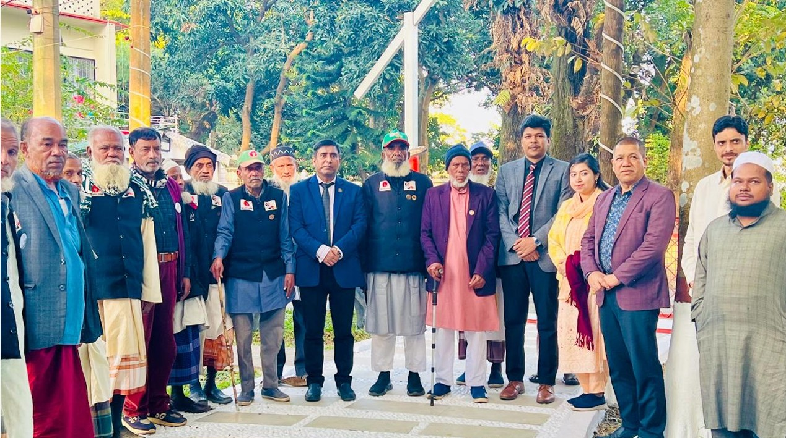

Preserving the Voices of Heroes: The 'Birer Konthe Birgatha' Project
Gaining freedom through the liberation war is the greatest achievement of the Bengali nation. This freedom was earned through the sacrifice of countless lives and immense self-sacrifice. To preserve the history of this struggle for current and future generations, the Ministry of Liberation War Affairs is implementing the "Ballad of the Heroic Voices" (Birer Konthe Birgatha) project. This monumental initiative aims to document the battlefield memories of all living freedom fighters through short video documentaries.
The project, executed by Management and Training International Ltd. (MTI Ltd.), involves producing 80,000 short video documentaries as YouTube content, capturing the heroic reminiscences of individual freedom fighters through detailed interviews.
A group photo with the heros of the Liberation War of 1971 in Bangladesh
Project Objectives and Scope
The core mission of the project is to create a comprehensive national archive of the liberation war's history, told directly by those who lived it. The main objectives include:
- Preserving Memories: To record the commentary of all living freedom fighters to preserve the memory of their heroic victory.
- Honoring 'Biranganas': To commemorate the contribution of the "Birangana" by recording their stories and those of the family members of the deceased.
- Documenting Key Events: To produce 16 separate, in-depth documentaries on major battles and significant events of the liberation war, organized by district, upazila, or sector.
- Creating a National e-Archive: To establish a national-level e-archive to securely store these glorious stories, ensuring they remain a permanent part of Bangladesh's history.
Raihan Khan's Role as Senior System Analyst
As the Senior System Analyst for this technologically intensive project, my role was to design, implement, and oversee the entire data management pipeline. With tens of thousands of video files being generated from across the country, a robust and scalable system was paramount for the project's success. My key responsibilities included:
1. System Design and Data Archiving
I designed the complete workflow for how video data would be collected, transferred, processed, and archived. This involved creating a structured system for cataloging and associating metadata (interviewer details, location, date, freedom fighter's MIS number, etc.) with each video file, making the vast repository of data easily searchable and retrievable for future use.
2. Technology Transfer and Storage Infrastructure
A critical challenge was securely transferring large video files from field teams in various districts to a central server. I designed a hybrid storage solution to manage this:
- Local Server (NAS): A Network Attached Storage (NAS) system was implemented for quick, on-premise access for the editing and quality control teams. This provided high-speed data retrieval and centralized management within our office.
- Cloud Server (Google Cloud): For long-term preservation, scalability, and redundancy, all approved content was systematically uploaded to Google Cloud Storage. This ensures the data is protected against physical damage or loss and can be accessed securely from anywhere.
A freedom fighter telling his story to the team before the video recording.
3. Team Coordination and Technical Oversight
Beyond system design, I was part of the administrative team responsible for field operations. I collaborated closely with directors, cinematographers, editors, and field survey teams to ensure technical standards were met. This included monitoring data collection quality, troubleshooting technical issues faced by field teams, and ensuring the smooth flow of information between the technical and administrative wings of the project.
A Project of National Importance
The "Birer Konthe Birgatha" project is more than just a data collection exercise; it's a race against time to capture living history. Through professional training for film crews, a systematic methodology, and high-quality production standards, the project ensures that the stories of our heroes are preserved with the dignity and accuracy they deserve. Being able to contribute my technical expertise to build the digital backbone of such a historically significant national project has been an immense honor.
Interested in my work?
Explore more projects or get in touch to discuss potential collaborations on large-scale data management and system design.
Contact Me